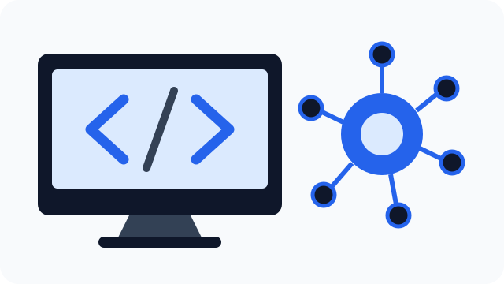

AI Training and Evaluation
I evaluate large language model responses for accuracy, reasoning, relevance, consistency, and instruction following. I also study recurring model behavior to help improve AI quality and reliability.
Jamal Oladele

Hello! I am Jamal Oladele, a computer science student and AI/ML professional interested in building dependable systems that solve practical problems.
My work combines AI evaluation, prompt engineering, software development, data analysis, and technical problem-solving.
I evaluate large language model responses for accuracy, reasoning, relevance, consistency, and instruction following. I also study recurring model behavior to help improve AI quality and reliability.
I use Python and modern development tools to create AI workflows, evaluation systems, asynchronous services, and data-driven applications.
I built a Python task-execution engine that coordinates multi-agent workflows using dependency resolution and asynchronous processing.
I created an evaluation system that compares AI-generated responses with source documents and flags claims that are not supported by the provided context.
I study computer science at Missouri University of Science and Technology. My goal is to continue growing as an engineer who can design responsible, reliable, and understandable AI systems.